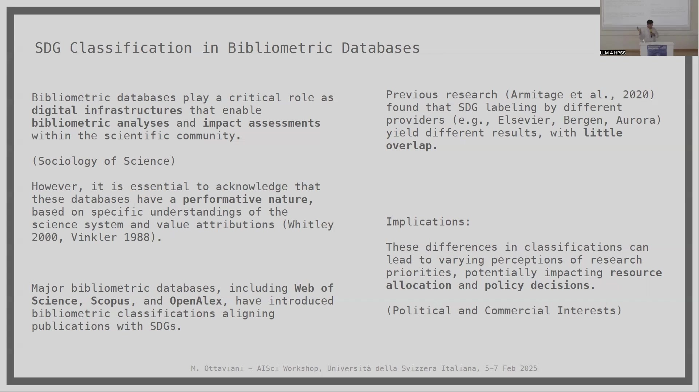
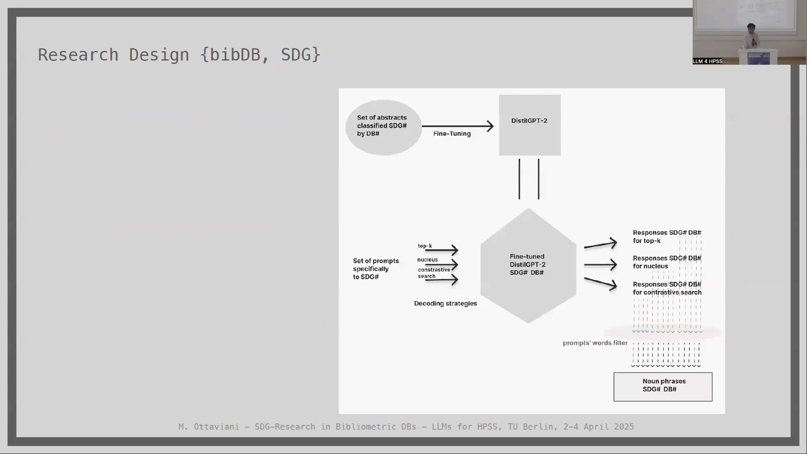
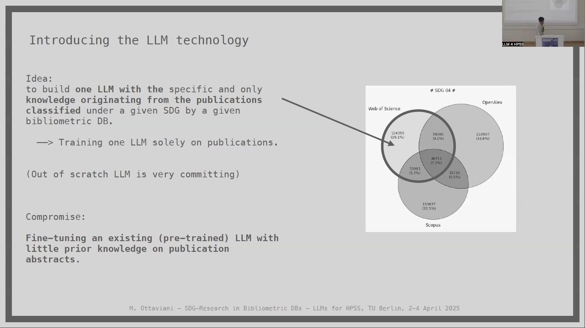

9 Leveraging Large Language Models to Assess Biases in Sustainable Development Goal Classifications Across Major Bibliometric Databases
Overview
This study critically examines the capacity of Large Language Models (LLMs) to assess biases within publications classified under the Sustainable Development Goals (SDGs) across three major bibliometric databases: Web of Science, Scopus, and OpenAlex. A primary objective involved employing LLMs, specifically a fine-tuned DistilGPT2 model, not only to detect these biases but also to demonstrate the feasibility of automating information extraction for informing research policy and decision-making.
The research team selected five SDGs pertaining to socioeconomic inequalities—SDG4 (Quality Education), SDG5 (Gender Equality), SDG10 (Reduced Inequalities), SDG8 (Decent Work and Economic Growth), and SDG9 (Industry, Innovation, and Infrastructure). They processed a common corpus of over 15 million publications, indexed across all three databases between January 2015 and July 2023. By fine-tuning separate DistilGPT2 instances for each SDG and database combination, utilising publication titles and abstracts, the team developed a robust method to benchmark LLM-generated content against official SDG targets. This involved crafting specific prompts derived from these targets and meticulously analysing the LLM responses across dimensions such as locations, actors, data/metrics, and thematic focuses.
Key findings revealed a significant, systematic omission in the database classifications concerning disadvantaged individuals, the poorest nations, and numerous underrepresented topics explicitly mentioned in SDG targets. Conversely, the classifications demonstrated a marked emphasis on economic superpowers and highly developed countries. The study also highlighted divergent methodologies amongst the databases, with Web of Science exhibiting a more theoretical orientation compared to the empirical leanings of Scopus and OpenAlex. These outcomes underscore the profound influence of ostensibly objective bibliometric classification practices on the perceived landscape of SDG-related research, potentially impacting resource allocation and policy formulation.
9.1 Background and Motivation: The Performative Nature of Bibliometric Databases

Matteo Ottaviani and Stephan Stahlschmidt initiated an investigation into the application of Large Language Models (LLMs) for assessing biases within scientific publications, as classified by major bibliometric databases. This work acknowledges the critical role that bibliometric databases, such as Web of Science, Scopus, and OpenAlex, fulfil within the sociology of science. Indeed, these platforms significantly influence the behaviours and decisions of academics, researchers, funding bodies, and policymakers alike.
These databases, however, are far from neutral entities; they respond to diverse political and commercial interests, inherently possessing a performative nature. This performativity shapes how the science system is understood and how value is attributed within it—a concept explored by scholars such as Whitley (2000) and Winkler (1988). The current study specifically considers Web of Science, Scopus, and OpenAlex.
Building upon prior research examining the labelling of Sustainable Development Goals (SDGs) and the construction of search queries, this study addresses a persistent challenge. Armitage et al. (2020), for instance, observed that SDG labelling by various providers yielded disparate results with minimal overlap. Such classification discrepancies can foster divergent perceptions of research priorities. Consequently, these disparities may profoundly impact resource allocation and policy decisions, frequently intertwined with underlying political and commercial interests. This investigation, therefore, scrutinises the aggregate effects arising from how bibliometric databases process metadata and how this subsequently influences diverse stakeholders.
9.2 Case Study: LLMs for SDG Research Analysis

This investigation centres on a case study analysing the representation of United Nations Sustainable Development Goals (SDGs) within bibliometric data, as detailed by Ottaviani & Stahlschmidt (2024). A primary motivation for this research stems from a desire to comprehend the aggregated effects on how SDG-related research is portrayed in bibliometric databases, particularly given the prospective integration of LLM-based analytical tools. To this end, the investigators employed relatively small pre-trained Large Language Models, selecting DistilGPT2 for its specific characteristics.
The core methodological approach involved fine-tuning these LLMs. Researchers trained separate models on distinct subsets of publication abstracts, with each subset corresponding to a particular SDG classification provided by one of the bibliometric databases under review. This strategy enabled the LLM technology to fulfil a dual role: firstly, as an instrument for detecting inherent data biases; and secondly, as a demonstration of concept. This latter role explored the feasibility of LLMs in automating information extraction processes, thereby informing decision-making within the research domain. Ultimately, the project aimed to conduct a broadly applicable exercise, assessing these aggregate effects and gauging their potential impact on research policy.
9.3 Methodological Design: Dependencies, Actors, Data, and Initial Classification Comparisons

The researchers conceptualised a chain of dependencies to frame their analysis. This chain posits that SDG classification practices define “Research on SDGs,” which in turn informs decision-making aimed at aligning with these goals, ultimately impacting socioeconomic inequalities. Various actors—including researchers, small and medium-sized enterprises (SMEs), and governments—process this “Research on SDGs.” The introduction of an LLM as a bias detector, it is posited, influences the adoption of LLMs in research policy, which itself can affect socioeconomic inequalities.
The study focused on three principal bibliometric databases: the proprietary Web of Science (Clarivate, US) and Scopus (Elsevier, UK), alongside the open-access OpenAlex (formerly Microsoft, US). Researchers selected five SDGs directly relating to socioeconomic inequalities. These comprised SDG4 (Quality Education), SDG5 (Gender Equality), and SDG10 (Reduced Inequalities) for the socio-equity dimension, complemented by SDG8 (Decent Work and Economic Growth) and SDG9 (Industry, Innovation, and Infrastructure) for the economic development dimension.
A substantial dataset formed the basis of the analysis: a jointly indexed subset of 15,471,336 publications. These publications, shared across all three databases and identified via exact DOI matching, spanned from January 2015 to July 2023. Investigators then applied the distinct SDG classification standards of Web of Science, Scopus, and OpenAlex to this common corpus for the five chosen SDGs. This process yielded three unique subsets of publications for each SDG, one corresponding to each database’s classification.
Initial comparisons of these SDG-classified papers revealed a strikingly low overlap amongst the databases, a finding consistent with earlier work by Armitage (2020). For instance, concerning SDG4 (Quality Education), only 7.2% of the relevant publications in the shared corpus were classified as such by all three databases. Similarly low intersection rates were observed for SDG5 (Gender Equality) at 4.8%, SDG10 (Reduced Inequalities) at 2.9%, SDG8 (Decent Work) at 2.5%, and SDG9 (Industry/Innovation) at a mere 2.0%. An interesting anomaly noted was that Web of Science classified approximately 10% of its SDG5-related publications as originating from the field of mathematics, including topics like geometrical differential equations, indicating potential classification idiosyncrasies.
9.4 LLM Implementation: DistilGPT2 Selection and Fine-Tuning

Investigators initially conceived of building bespoke Large Language Models, each trained exclusively on publications classified under a specific SDG by a particular bibliometric database. However, developing LLMs entirely from scratch proved a prohibitively resource-intensive endeavour. Consequently, the team adopted a pragmatic compromise: fine-tuning an existing, pre-trained LLM known for having limited prior knowledge, using publication abstracts as the training material.
The choice fell upon DistilGPT2. This selection was deliberate, as prominent commercial and large open-source LLMs were deemed ineligible. Such models often possess pre-existing knowledge about SDGs and strong semantic associations derived from their extensive training datasets, which can include sources like Wikipedia and Reddit discussions. DistilGPT2, in contrast, is a lightweight, English-speaking variant of the open-source GPT2 model that utilises a technique called “distillation,” as described by Sanh (2019). With 82 million parameters—significantly fewer than models like GPT-4—DistilGPT2 offered feasibility for working with proprietary datasets; importantly, it was assessed to have no significant prior semantic understanding of the specific publication domain or the prompts to be used.
The fine-tuning procedure involved creating 15 distinct LLM instances: one for each of the five selected SDGs, replicated across the three bibliometric databases. For this fine-tuning, researchers utilised the titles and abstracts of the classified publications. The task was structured such that the LLM, when given a new title as a prompt, would generate a new abstract, with the training aimed at maximising the similarity of this output to the characteristics of the source corpus.
9.5 Benchmarking: SDG Targets and Prompt Engineering

To evaluate the fine-tuned LLMs, researchers developed a benchmarking methodology rooted in the official structure of the UN Sustainable Development Goals. Each SDG is defined by a series of specific targets; for the SDGs under analysis, this typically ranged from eight to twelve targets per goal. For instance, SDG4 (Quality Education) includes targets such as ensuring all children complete primary and secondary education (Target 4.1), providing access to early childhood development, guaranteeing equal access to vocational and tertiary education for all, enhancing youth and adult skills for employment, eliminating gender disparities in education, and ensuring literacy and numeracy for all learners by 2030, as outlined in the UN’s 2030 Agenda for SDGs.
Based on this structure, the team implemented a systematic prompt generation strategy. For every individual target within each of the five selected SDGs, ten distinct questions, or prompts, were carefully crafted. Each of these prompts was designed to probe different aspects and nuances of its corresponding target. This meticulous process yielded a specific set of 80 to 120 prompts for each SDG.
These target-derived prompts formed the cornerstone of the benchmarking standard. Their primary purpose was to establish a ground truth against which the LLM responses could be measured, thereby defining compliance with the stated objectives of the SDGs. Furthermore, this approach facilitated the identification of “biases” or significant informational omissions. The underlying rationale is straightforward: if an LLM, fine-tuned on a corpus of literature purportedly related to a specific SDG, cannot generate relevant responses to prompts directly addressing that SDG’s official targets, it indicates that information crucial to those targets is either missing or substantially underrepresented within the dataset upon which the LLM was trained. This method provides a systematic way to assess both the completeness of the information captured by the database classifications and the potential biases therein.
9.6 Research Design and Analytical Workflow

The comprehensive research design involved several distinct stages, beginning with the input data: sets of publication abstracts classified under a specific Sustainable Development Goal (SDG#) by one of the three bibliometric databases (DB#). Each of these curated sets of abstracts then served as the training material to fine-tune an instance of the DistilGPT-2 model. This procedure resulted in a collection of specialised LLMs, each uniquely adapted to the content associated with a particular SDG as represented by a specific database (denoted as Fine-tuned DistilGPT-2 SDG# DB#).
Subsequently, the prompting process commenced. Researchers utilised the previously developed sets of prompts, each tailored to a specific SDG#. These prompts were systematically inputted into the corresponding fine-tuned DistilGPT-2 model. To explore the variability in LLM output and ensure robustness, the team applied three distinct decoding strategies for generating responses: top-k sampling, nucleus (or top-p) sampling, and contrastive search. This approach yielded three distinct sets of responses for every SDG and database combination, reflecting the nuances of each decoding method.
For the initial analysis of these generated responses, researchers applied a filter based on the words used in the original prompts. Following this, noun phrases were extracted from the filtered responses, creating a structured dataset of key terms (Noun phrases SDG# DB#). However, the analytical scrutiny extended beyond this. To ensure a thorough and nuanced comparison, investigators also conducted direct searches within the full text of the LLM-generated responses, complementing the insights derived from noun phrase analysis.
9.7 LLM Response Analysis: Uncovering Biases

Researchers analysed the LLM-generated responses by matching the extracted noun phrases against the official targets of each Sustainable Development Goal. This analysis was structured around four key data dimensions: Locations, Actors, Data/Metrics, and Focuses. For every SDG under review, the team assessed the degree of compliance with its targets and identified any discernible biases. Importantly, this process also highlighted differences in how the three bibliometric databases represented SDG-related research.
An illustrative example using SDG4 (Quality Education) revealed significant omissions. The LLM responses, reflecting the underlying database classifications, inadequately addressed numerous geographical areas, including most African countries (with the exception of South Africa), other developing nations, Least Developed Countries (LDCs), and Small Island Developing States (SIDS). Similarly, critical groups of actors were systematically overlooked, such as vulnerable populations, persons with disabilities, indigenous peoples, and children in vulnerable situations. Many crucial thematic focuses pertinent to SDG4 were also underrepresented or entirely missing from the LLM outputs. These included vocational training, scholarships, the creation of safe and inclusive learning environments, education for sustainable lifestyles, human rights education, the promotion of peace and non-violence, global citizenship, the appreciation of cultural diversity, and even fundamental aspects like free primary and secondary education and tertiary education.
Extending these observations across all five selected SDGs, several patterns emerged. Regarding locations, LDCs received scant attention, with Sub-Saharan Africa being mentioned primarily in the context of SDG8. The United States held an “undoubted monopoly” in terms of mentions, followed by South Africa and China, and then the UK and Australia. In the realm of metrics and data, the LLMs frequently recalled specific surveys like the Demographic and Health Surveys (DHS) and World Values Survey (WVS) as data sources. Various indicators, benchmarks, and research methodologies—spanning theoretical, empirical, and thematic analyses, as well as market dynamics and macroeconomics—were also identified, with semantic networks formed after fine-tuning indicating recurrent survey data.
A consistent and concerning finding related to actors: discriminated and vulnerable categories were systematically overlooked across all analysed SDGs. Even when prompts specifically targeted these groups for different SDGs, the LLMs failed to generate substantial, macro-level responses. In terms of thematic focuses, many SDG-specific sensitive topics, such as human trafficking, human exploitation, and migration, were notably absent. Furthermore, the analysis discerned database-specific tendencies. Across three different SDGs, Web of Science’s classified literature leaned towards a more theoretical approach. Conversely, both Scopus and OpenAlex appeared to favour and represent more empirical research.
9.8 Synthesis and Limitations

The investigation’s findings highlight a critical issue: employing Large Language Models as an analytical instrument, mediating between the SDG classifications provided by bibliometric databases and their interpretation by policymakers, uncovers a systematic deficiency in the underlying data. Specifically, scientific publications, as classified under various SDGs, frequently overlook the most disadvantaged categories of individuals, the poorest nations, and numerous underrepresented topics that are, in fact, explicit focuses of the SDG targets themselves. In stark contrast, the classified literature demonstrates considerable attention towards economic superpowers and rapidly developing countries. These results unequivocally show how an ostensibly objective, science-informed practice such as the bibliometric classification of SDGs can wield a decisive influence on perceived research landscapes and priorities.
Researchers also acknowledged several inherent methodological limitations. Large Language Models exhibit high sensitivity to a range of factors. These include the specific model architecture chosen, although DistilGPT2 was selected for its suitability to the task. The nature of the training data is also paramount; this was partly addressed by utilising three distinct databases, which provided varied training corpora for the LLMs. Furthermore, hyper-parameters, general model parameters, and the chosen decoding strategy all significantly influence LLM behaviour. The impact of decoding strategy was partially mitigated by employing three different recognised methods (top-k, nucleus sampling, and contrastive search). Finally, whilst the study employed a general framework, the use of more developed or specialised LLM architectures could potentially reveal different or more nuanced outcomes. Despite efforts to account for variations in training data and decoding strategies, these elements remain influential variables in LLM performance and output.